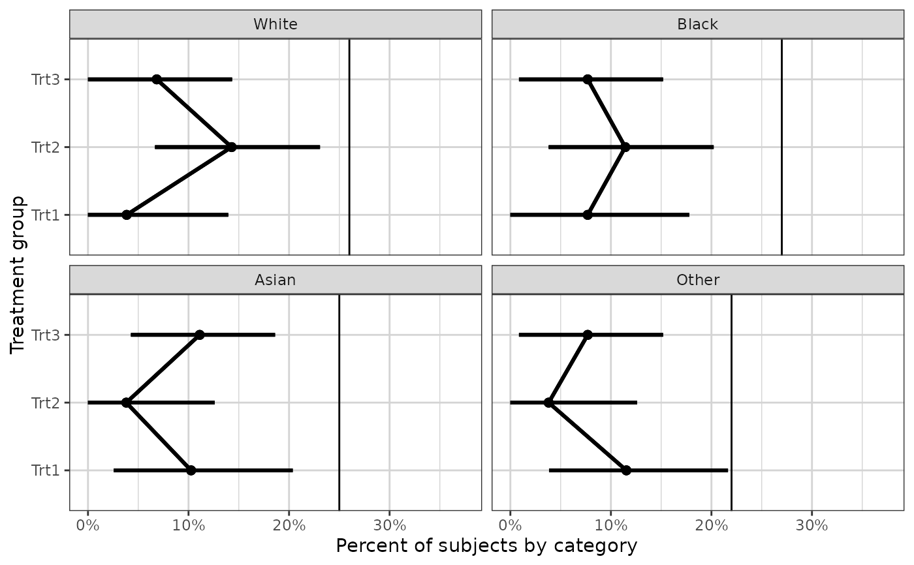

Plot data with mean and confidence intervals
xgx_stat_ci.Rdxgx_stat_ci returns a ggplot layer plotting mean +/- confidence
intervals
xgx_stat_ci(mapping = NULL, data = NULL, conf_level = 0.95, distribution = "normal", bins = NULL, breaks = NULL, geom = list("point", "line", "errorbar"), position = "identity", fun.args = list(), fun.data = NULL, na.rm = FALSE, orientation = "x", show.legend = NA, inherit.aes = TRUE, ...)
Arguments
| mapping | Set of aesthetic mappings created by `aes` or `aes_`. If specified and `inherit.aes = TRUE` (the default), it is combined with the default mapping at the top level of the plot. You must supply mapping if there is no plot mapping. |
|---|---|
| data | The data to be displayed in this layer. There are three options: If NULL, the default, the data is inherited from the plot data as specified in the call to ggplot. A data.frame, or other object, will override the plot data. All objects will be fortified to produce a data frame. See fortify for which variables will be created. A function will be called with a single argument, the plot data. The return value must be a data.frame., and will be used as the layer data. |
| conf_level | The percentile for the confidence interval (should fall between 0 and 1). The default is 0.95, which corresponds to a 95 percent confidence interval. |
| distribution | The distribution which the data follow, used for
calculating confidence intervals. The options are "normal", "lognormal",
and "binomial". The "normal" option will use the Student t Distribution
to calculate confidence intervals, the "lognormal" option will transform
data to the log space first. The "binomial" option will use the
|
| bins | number of bins to cut up the x data, cuts data into quantiles. |
| breaks | breaks to cut up the x data, if this option is used, bins is ignored |
| geom | Use to override the default geom. Can be a list of multiple geoms, e.g. list("point","line","errorbar"), which is the default. |
| position | Position adjustment, either as a string, or the result of a call to a position adjustment function. |
| fun.args | Optional additional arguments passed on to the functions. |
| fun.data | A function that is given the complete data and should return a data frame with variables ymin, y, and ymax. |
| na.rm | If FALSE, the default, missing values are removed with a warning. If TRUE, missing values are silently removed. |
| orientation | The orientation of the layer, passed on to ggplot2::stat_summary.
Only implemented for ggplot2 v.3.3.0 and later. The default ("x") summarizes y values over
x values (same behavior as ggplot2 v.3.2.1 or earlier). Setting |
| show.legend | logical. Should this layer be included in the legends? NA, the default, includes if any aesthetics are mapped. FALSE never includes, and TRUE always includes. |
| inherit.aes | If FALSE, overrides the default aesthetics, rather than combining with them. This is most useful for helper functions that define both data and aesthetics and shouldn't inherit behaviour from the default plot specification, e.g. borders. |
| ... | other arguments passed on to layer. These are often aesthetics, used to set an aesthetic to a fixed value, like color = "red" or size = 3. They may also be parameters to the paired geom/stat. |
Value
ggplot2 plot layer
Details
This function can be used to generate mean +/- confidence interval plots for different distributions, and multiple geoms with a single function call.
Examples
# default settings for normally distributed data, 95% confidence interval, data <- data.frame(x = rep(c(1, 2, 3), each = 20), y = rep(c(1, 2, 3), each = 20) + stats::rnorm(60), group = rep(1:3, 20)) xgx_plot(data, ggplot2::aes(x = x, y = y)) + xgx_stat_ci(conf_level = 0.95)# try different geom xgx_plot(data, ggplot2::aes(x = x, y = y)) + xgx_stat_ci(conf_level = 0.95, geom = list("ribbon", "point", "line"))# plotting lognormally distributed data data <- data.frame(x = rep(c(1, 2, 3), each = 20), y = 10^(rep(c(1, 2, 3), each = 20) + stats::rnorm(60)), group = rep(1:3, 20)) xgx_plot(data, ggplot2::aes(x = x, y = y)) + xgx_stat_ci(conf_level = 0.95, distribution = "lognormal")# note: you DO NOT need to use both distribution = "lognormal" # and scale_y_log10() xgx_plot(data, ggplot2::aes(x = x, y = y)) + xgx_stat_ci(conf_level = 0.95) + xgx_scale_y_log10()# plotting binomial data data <- data.frame(x = rep(c(1, 2, 3), each = 20), y = stats::rbinom(60, 1, rep(c(0.2, 0.6, 0.8), each = 20)), group = rep(1:3, 20)) xgx_plot(data, ggplot2::aes(x = x, y = y)) + xgx_stat_ci(conf_level = 0.95, distribution = "binomial")# including multiple groups in same plot xgx_plot(data, ggplot2::aes(x = x, y = y)) + xgx_stat_ci(conf_level = 0.95, distribution = "binomial", ggplot2::aes(color = factor(group)), position = ggplot2::position_dodge(width = 0.5))# plotting ordinal or multinomial data set.seed(12345) data = data.frame(x = 120*exp(stats::rnorm(100,0,1)), response = sample(c("Mild","Moderate","Severe"), 100, replace = TRUE), covariate = sample(c("Male","Female"), 100, replace = TRUE)) xgx_plot(data = data) + xgx_stat_ci(mapping = ggplot2::aes(x = x, response = response, colour = covariate), distribution = "ordinal", bins = 4) + ggplot2::scale_y_continuous(labels = scales::percent_format()) + ggplot2::facet_wrap(~response)#> #> #>#> #> #>#> #> #>#> #> #>#> #> #>#> #> #>#> Warning: Unknown or uninitialised column: `flipped_aes`.#> Warning: Unknown or uninitialised column: `flipped_aes`.#> Warning: Unknown or uninitialised column: `width`.xgx_plot(data = data) + xgx_stat_ci(mapping = ggplot2::aes(x = x, response = response, colour = response), distribution = "ordinal", bins = 4) + ggplot2::scale_y_continuous(labels = scales::percent_format()) + ggplot2::facet_wrap(~covariate)#> #> #>#> #> #>#> #> #>#> #> #>#> #> #>#> #> #>#> Warning: Unknown or uninitialised column: `flipped_aes`.#> Warning: Unknown or uninitialised column: `flipped_aes`.#> Warning: Unknown or uninitialised column: `width`.# Example plotting categorical vs categorical data set.seed(12345) data = data.frame(x = 120*exp(stats::rnorm(100,0,1)), response = sample(c("Trt1", "Trt2", "Trt3"), 100, replace = TRUE), covariate = factor( sample(c("White","Black","Asian","Other"), 100, replace = TRUE), levels = c("White", "Black", "Asian", "Other"))) xgx_plot(data = data) + xgx_stat_ci(mapping = ggplot2::aes(x = response, response = covariate), distribution = "ordinal") + xgx_stat_ci(mapping = ggplot2::aes(x = 1, response = covariate), geom = "hline", distribution = "ordinal") + ggplot2::scale_y_continuous(labels = scales::percent_format()) + ggplot2::facet_wrap(~covariate) + ggplot2::xlab("Treatment group") + ggplot2::ylab("Percent of subjects by category")#> #> #>#> #> #>#> #> #>#> #> #>#> Warning: Unknown or uninitialised column: `flipped_aes`.#> Warning: Unknown or uninitialised column: `flipped_aes`.#> Warning: Unknown or uninitialised column: `width`.#> #>#> #>#> #>#> #># Same example with orientation flipped (only works for ggplot2 v.3.3.0 or later) # only run if ggplot2 v.3.3.0 or later ggplot2_geq_v3.3.0 <- utils::compareVersion( as.character(utils::packageVersion("ggplot2")), '3.3.0') >= 0 if(ggplot2_geq_v3.3.0){ xgx_plot(data = data) + xgx_stat_ci(mapping = ggplot2::aes(y = response, response = covariate), orientation = "y", distribution = "ordinal") + xgx_stat_ci(mapping = ggplot2::aes(y = 1, response = covariate), orientation = "y", geom = "vline", distribution = "ordinal") + ggplot2::scale_x_continuous(labels = scales::percent_format()) + ggplot2::facet_wrap(~covariate) + ggplot2::ylab("Treatment group") + ggplot2::xlab("Percent of subjects by category") }#> Warning: Ignoring unknown aesthetics: y#> #> #>#> #> #>#> #> #>#> #> #>#> Warning: Unknown or uninitialised column: `flipped_aes`.#> Warning: Unknown or uninitialised column: `flipped_aes`.#> Warning: Unknown or uninitialised column: `width`.#> #>#> #>#> #>#> #>